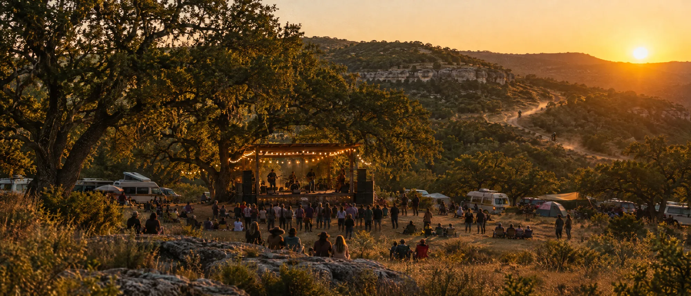

Dept 01
Festival production
Multi-day live music with camping, food, ops and a community ethos. Site plan through artist relations through teardown.
Call sheet no. 1
Find the right people for the right solution, then make it real. Live moments people remember, from SXSW launch nights to a festival in the Texas Hill Country.
A gift concept from Gordon's team, built from Cale's own words, his 2027 mark and Gordon's photograph of the 2026 schedule.

01 Ethos
Find the right people.
Build the right room.
Great brand experiences are built by collectives, not org charts. The work starts with the brief and ends with a moment audiences can feel, and the throughline is the same every time: find the right people for the right solution, then make it real.
02 The 2026 show

| Day | Call | Set |
|---|---|---|
| Fri 4/24 | 3:00 PM | Silas Lowe |
| 6:00 + 8:00 PM | Delvon Lamarr Organ Trio, two sets | |
| Sat 4/25 | 11:00 AM | The Peterson Brothers |
| 2:00 PM | Cilantro Boombox | |
| 4:30 PM | Los Juanos | |
| 7:00 PM | Ikebe Shakedown | |
| Sun 4/26 | 11:00 AM | The Redbearded Strangers |
| 2:00 PM | Rat King Cole | |
| 5:30 PM | Thee Heart Tones |
Nine acts and ten sets across three days (Delvon Lamarr Organ Trio played twice), from the 2026 schedule sign.
Next call
April 29 in San Antonio, then April 30 to May 2 at Flat Rock Ranch. Ride the hills. Hear the music.

From Cale's 2027 brand board
03 Departments
Dept 01
Multi-day live music with camping, food, ops and a community ethos. Site plan through artist relations through teardown.
Dept 02
Launches, takeovers, conference experiences and sponsor moments that make people stop, share and remember.
Dept 03
Match-day moments and hospitality experiences, with international football in the record.
Dept 04
Senior producer instincts, and the right people in the room, for a single launch, a quarterly cadence or a one-time bet.
04 Credits
Executive Producer, Comfort, TX
A three-day Hill Country festival of live music, camping, trails and food. Year one was the public unveiling of a community that started as an invitation-only ranch party.
Special Projects, Houston, TX
Special-projects work across a portfolio spanning sport and hospitality, where the brief was usually "figure out how to make this real."
Executive Producer, Austin, TX
The launch event for Wave, interactive virtual concerts at the moment XR was finding its first real audience.
VP, Experiential Services
Leading an experiential practice building branded live programs across tech, music and consumer categories.